This transition metal is often teamed with aluminium to form an alloy for making sporting
goods like bicycle frames and components.
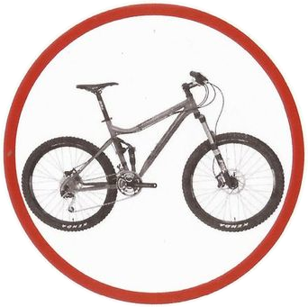
The Guggenheim Museum in Bilbao, Spain is clad with sheets made from this transition metal.
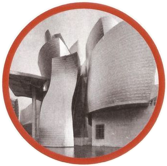
This transition metal is often teamed with steel to form an alloy for making tools like wrenches
and surgical instruments.
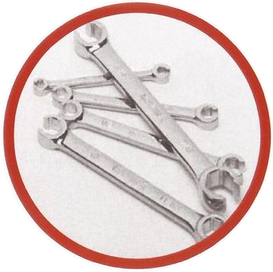
This transition metal is often used on cars and motorcycles to protect bumpers and other parts
from rust and corrosion while providing a mirror-like finish.
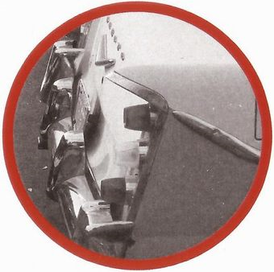
This transition metal was used as a pigment in some of the first cave paintings. This cave
painting found in France is estimated to be over 15,000 years old.
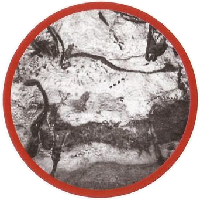
Sky scrapers like the Sears Tower (now Willis Tower) in Chicago, Illinois owe their existence to
this transition metal whose strength allowed buildings to be built much higher than using traditional load bearing
masonry construction.
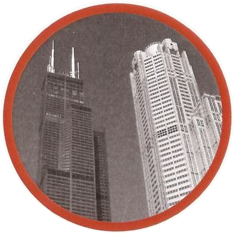
One of the earliest uses of this transition metal was as a blue pigment in porcelain and glassware.
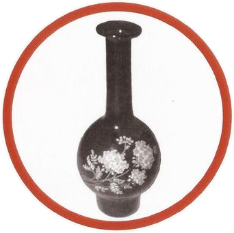
This five cent piece in the United States is nicknamed after this transition metal which has many
uses including coinage.
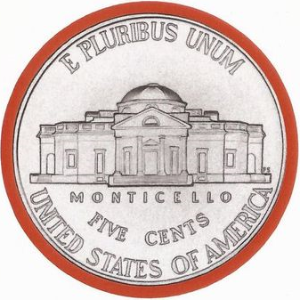
The Statue of Liberty, located in New York City, USA is clad with sheets made from this transition
metal.
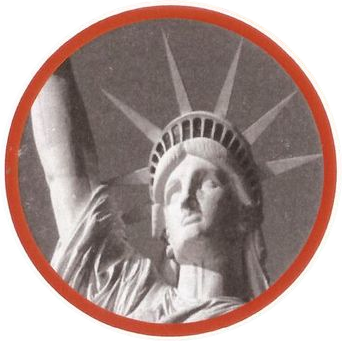
This transition metal is commonly used as a coating to protect household metal items like watering cans
from rust and corrosion.
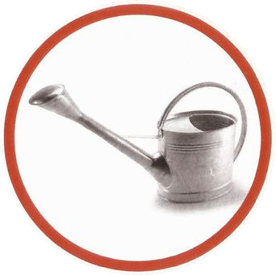
This transition metal resists corrosion at high temperatures which makes it very useful as a component in
spark plugs which are subjected to high temperatures and moisture.
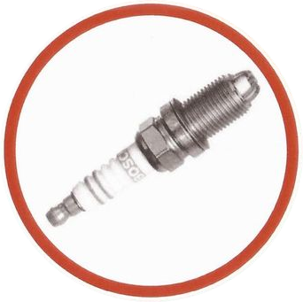
Ceramic knives are made from an oxide of this transition metal.
Which is it?
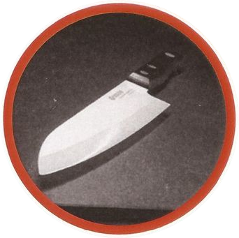
Pacemakers which help regulate a person's heart rate are made with this transition metal
because it doesn't react with the chemicals inside a person's body.
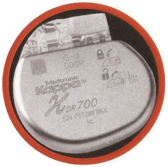
When alloyed with silicon, this transition metal becomes and electrical conducting ceramic
primarily used as heating elements.
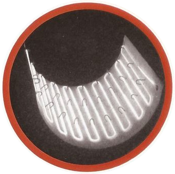
Some high tech medical devices use a nuclear isomer of this transition metal in order to diagnose
a variety of illnesses.